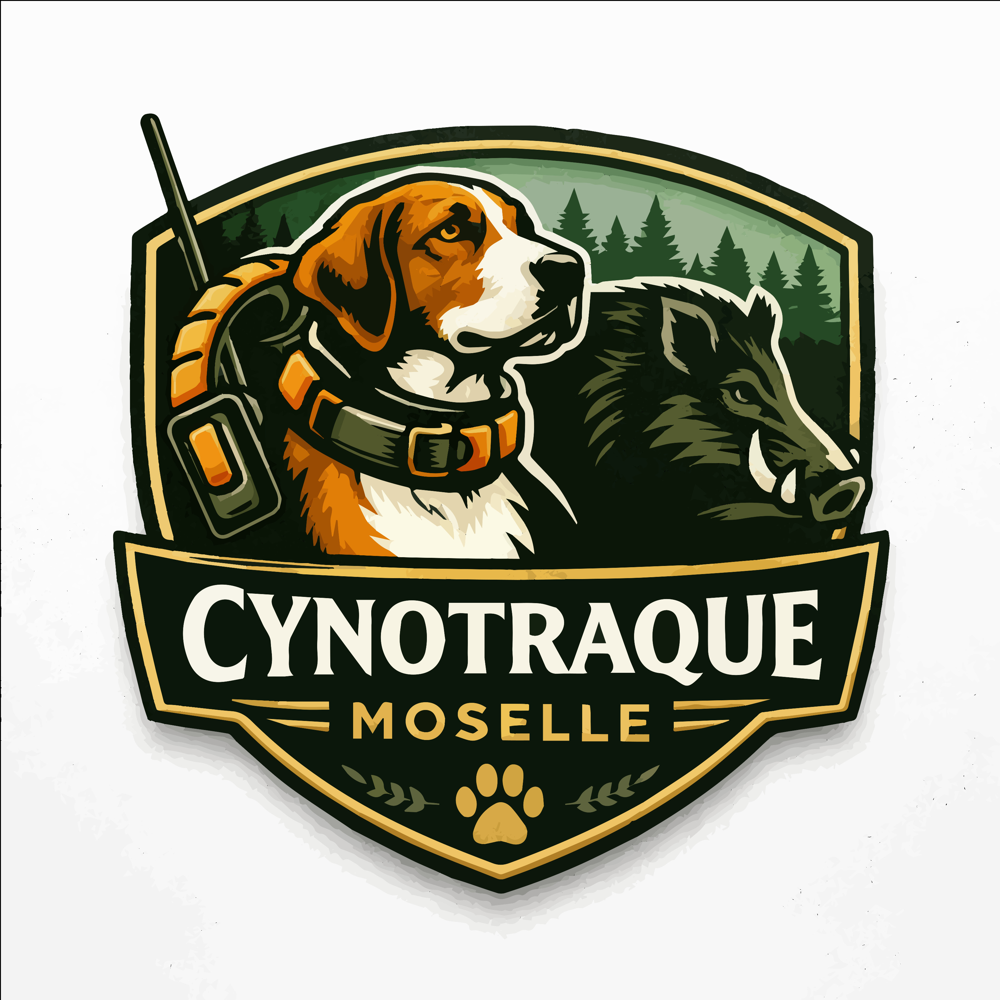

Traque • Chiens • Territoire
Cynotraque Moselle rassemble des passionnés de traque au chien, engagés dans une pratique sérieuse, organisée et respectueuse du territoire.
Valorisation des chiens de traque et développement des compétences.
Interventions organisées en Moselle, avec rigueur et coordination.
Cohésion, entraide et transmission entre membres.
Vous êtes passionné par la traque et souhaitez intégrer une équipe structurée ? Contactez-nous.
Nous contacter